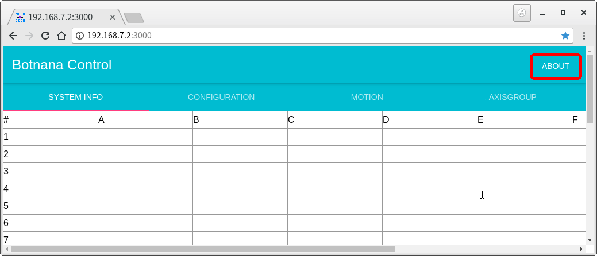
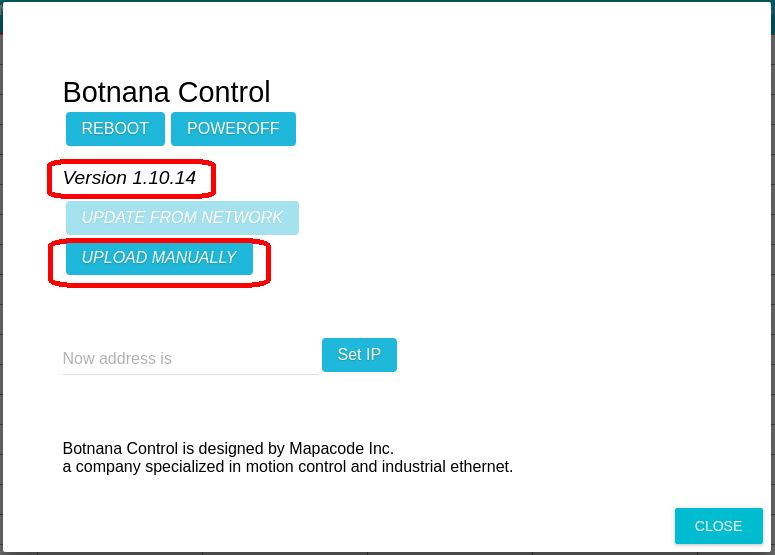
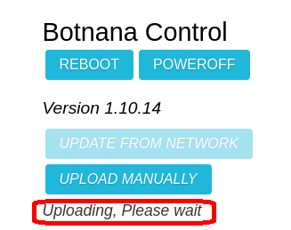
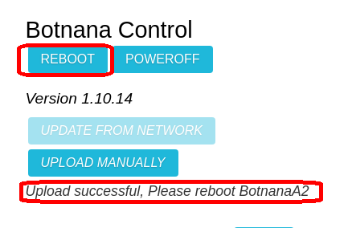
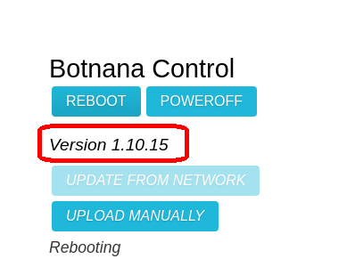

軟體更新
當主站軟體因新增功能或是修正錯誤，需要進行軟體更新，就必須依循以下步驟。
取得軟體更新檔
可以由動程公司取得更新檔。依據不同的平台其更新檔名稱如下：
| 搭載平台 | 更新檔名稱 |
|---|---|
| BN-A2A | botnana-control_*_armhf.deb |
| BN-B2A | botnana-control_*_armhf.deb |
| BN-J2A | botnana-control_*_x86.deb |
| BN-J4A | botnana-control_*_x86.deb |
更新步驟
以更新 BN-B2A 的主控軟體從版號 1.10.14 更新到 1.10.15 為例。
更新檔的檔名為 botnana-control_1.10.15-117_armhf.deb
- 首先要先準備一部設置好與 Botnana Control 網路連線的電腦。此電腦建議有安裝 Google Chrome 的瀏覽器。
- 開啟 Google Chrome 瀏覽器，並連線到 http://192.168.7.2:3000，一般來說 Botnana Control 的控制盒的IP 位置設置都是 192.168.7.2，如果是其它設定就要連線到指定的 IP 位置。
- 進入 Botnana Control 首頁，點選右上方的 [ABOUT]。
 - 進入到 [ABOUT] 畫面，此畫面會有目前的版本資訊，此時版號是 1.10.14。點選 [UPLOAD MANUALLY]，會出現檔案瀏覽器，切換到 botnana-control_1.10.15-117_armhf.deb 所在的目錄，選擇該檔案即可。
 - 此時 [ABOUT] 畫面會出現 "Uploading, Please wait" 的提示訊息。
 - 等待 "Upload successful, please reboot Botnana" 的提示訊息出現，該提示訊息出現後，就可以點選 [REBOOT]。
 - 等待重新開機到安裝完成的過程中，提示訊息會顯示 "Rebooting"。安裝完成後，版號就會變成 1.10.15。搭載的平台是 BN-A2A/BN-B2A 大約是 3 分鐘左右，BN-J2A/BN-J4A 大約是 1 分鐘左右。
 - 更新完成。因為瀏覽器上的部份資料是在一開始連線時取得，所以建議重新載入畫面。